정보처리산업기사 (2016-05-08 기출문제)
1과목: 데이터 베이스
1. 뷰(view)에 대한 설명으로 옳지 않은 것은?
- 데이터베이스 일부만 선택적으로 보여주므로 데이터베이스의 접근을 제한할 수 있다.
- 복잡한 검색을 사용자는 간단하게 할 수 있다.
- 사용자에게 데이터의 독립성을 제공할 수 있다.
- 뷰는 별도의 디스크 공간을 차지하여 생성되는 실제적 테이블이다.
(정답률: 84%)

2. 다음 트리에 대한 운행 결과의 순서가 “A→B→D→C→E→G→H→F” 일 경우, 적용된 운행 기법은?
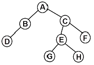
- Pre-order
- Post-order
- In-order
- Last-order
(정답률: 75%)
3. 다음 트리를 Post-order로 운행한 결과는?
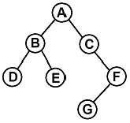
- A, B, D, E, C, F, G
- D, B, E, A, C, G, F
- A, B, C, D, E, F, G
- D, E, B, G, F, C, A
(정답률: 73%)
4. 다음 자료구조 중 성격이 다른 하나는?
- STACK
- QUEUE
- DEQUE
- TREE
(정답률: 85%)
5. 데이터의 독립성을 구현하기 위한 3계층 스키마(Schema)에 해당하지 않는 것은?
- 개념(Conceptual) 스키마
- 외부(External) 스키마
- 내부(Internal) 스키마
- 객체(Object) 스키마
(정답률: 84%)
6. 해싱에서 서로 다른 두 개 이상의 레코드가 동일한 주소를 갖는 현상을 의미하는 것은?
- Collision
- Synonym
- Bucket
- Slot
(정답률: 67%)
7. 다음 자료를 삽입 정렬을 이용하여 오름차순으로 정렬할 경우 “pass 2”의 결과는?
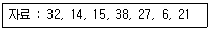
- 14, 32, 15, 38, 27, 6, 21
- 6, 14, 15, 27, 32, 38, 21
- 14, 15, 27, 32, 38, 6, 21
- 14, 15, 32, 38, 27, 6, 21
(정답률: 72%)
8. 어떤 릴레이션에 존재하는 튜플의 개수를 무엇이라고 하는가?
- cardinality
- degree
- domain
- attribute
(정답률: 78%)
9. 학생(STUDENT) 테이블에서 어떤 학과(DEPT)들이 있는지 검색하는 SQL명령은? (단, 결과는 중복된 데이터가 없도록 한다.)
- SELECT ONLY * FROM STUDENT;
- SELECT DISTINCT DEPT FROM STUDENT;
- SELECT ONLY DEPT FROM STUDENT;
- SELECT NOT DUPLICATE DEPT FROM STUDENT;
(정답률: 82%)
10. 부분 함수 종속 제거가 이루어지는 정규화 단계는?
- 1NF → 2NF
- 2NF → 3NF
- 3NF → BCNF
- BCNF → 4NF
(정답률: 76%)
11. 다음 ( ) 안의 내용에 적합한 단어는?
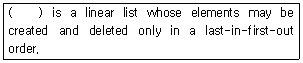
- Stack
- Queue
- List
- Tree
(정답률: 75%)
12. 한 릴레이션의 기본 키를 구성하는 어떠한 속성값도 널(null) 값이나 중복 값을 가질 수 없다는 것을 의미하는 것은?
- 참조 무결성 제약 조건
- 주소 무결성 제약 조건
- 원자값 무결성 제약 조건
- 개체 무결성 제약 조건
(정답률: 78%)
13. 해시 함수 중 키를 여러 부분으로 나누고 각 부분의 값을 모두 더하거나 보수 값을 취해, 더하여 홈 주소를 얻는 방법은?
- 제곱 방법(mid-square)
- 기수 변환법(radix conversion)
- folding 법
- 숫자 분석법(digit analysis)
(정답률: 59%)
14. SQL 명령 중 DDL에 해당하는 것으로만 짝지어진 것은?
- CREATE, ALTER, SELECT
- CREATE, ALTER, DROP
- CREATE, UPDATE, DROP
- DELETE, ALTER, DROP
(정답률: 80%)
15. 관계해석에 대한 설명으로 틀린 것은?
- 프레디키트 해석(predicate calculus)으로 질의어를 표현한다.
- 원하는 정보와 그 정보를 어떻게 유도하는가를 기술하는 절차적인 언어이다.
- 튜플 관계해석과 도메인 관계해석이 있다.
- 관계대수로 표현한 식은 관계해석으로 표현할 수 있다.
(정답률: 75%)
16. SQL 문에서 테이블 생성에 사용되는 문장은?
- DROP
- ALTER
- SELECT
- CREATE
(정답률: 84%)
17. SQL 언어의 데이터 제어어(DCL)에 해당하는 것은?
- SELECT
- INSERT
- UPDATE
- GRANT
(정답률: 79%)
18. 다음 질의문 실행의 결과는?
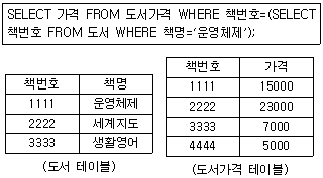
- 5000
- 7000
- 15000
- 23000
(정답률: 87%)
19. 트랜잭션의 특성 중 트랜잭션 내의 모든 연산은 반드시 한꺼번에 완료되어야 하며, 그렇지 못한 경우는 한꺼번에 취소되어야 한다는 것은?
- atomicity
- consistency
- isolation
- durability
(정답률: 68%)
20. 트리 구조에서 각 노드가 가진 가지 수, 즉 서브 트리의 수를 그 노드의 무엇이라고 하는가?
- terminal node
- domain
- attribute
- degree
(정답률: 70%)
2과목: 전자 계산기 구조
21. 중앙처리장치와 주기억장치의 속도 차이가 현저할 때 인스트럭션의 수행속도가 주기억장치에 제한을 받지 않고 중앙처리장치의 속도에 근접하게 수행되도록 하는 기억장치는?
- 캐시 메모리
- 인스트럭션 버퍼
- CAM
- 제어기억장치
(정답률: 78%)
22. 기억장치로부터 명령이나 데이터를 읽을 때 제일 먼저 하는 동작은?
- 명령어 해독
- 명령어 실행
- 어드레스 증가
- 어드레스 지정
(정답률: 48%)
23. 일반적인 컴퓨터의 CPU 구조 가운데 수식을 계산할 때 수식을 미리 처리되는 순서인 역polish(또는 postfix) 형식으로 바꾸어야 하는 CPU 구조는?
- 단일 누산기 구조 CPU
- 범용 레지스터 구조 CPU
- 스택 구조 CPU
- 모든 CPU 구조
(정답률: 50%)
24. 인터럽트 발생 시에 반드시 보존되어야 하는 레지스터는?
- MAR
- 누산기
- PC
- MBR
(정답률: 54%)
25. 다음의 실행 주기(execution cycle)는 어떤 명령을 나타내는 것인가?
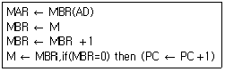
- JMP
- AND
- ISZ
- BSA
(정답률: 41%)
26. 가산기능과 보수기능만 있는 ALU를 이용하여 연산 F = A – B를 하고자 할 때 가장 적합한 방법은?
- F=A-B
- F=A-B+1
- F=A+B'+1
- F=A'+B+1
(정답률: 59%)
27. 하나의 명령에 의하여 CPU를 거치지 않고 데이터를 블록(block) 단위로 이동할 수 있도록 하는 하드웨어 장치는?
- DMA(direct memory access) 장치
- DAT(dynamic address translation) 장치
- UART(universal asynchronous receiver-transmitter) 장치
- Dual – bus 장치
(정답률: 75%)
28. 메모리 인터리빙(interleaving)의 사용 목적으로 가장 적합한 것은?
- 메모리 액세스 효율 증대
- 기억 용량의 증대
- 입·출력 장치의 증설
- 전력 소모 감소
(정답률: 74%)
29. 입·출력 프로그램의 목적과 가장 거리가 먼 것은?
- CPU의 loading
- CPU와 I/O의 통신
- Interrupt 처리
- I/O 장치의 구동
(정답률: 51%)
30. 메모리 호출 시간(access time)에 대한 설명으로 가장 적합한 것은?
- 메모리에 주소를 가한 후 데이터 출력이 호출되기 전까지의 시간
- 메모리에 주소를 가한 후 어드레스 디코더가 신호를 디코딩 할 때까지의 시간
- 메모리에 주소를 가한 후 이 신호가 안정될 때까지의 시간
- 필요한 워드를 선택하여 그것을 읽거나 쓰는데 걸리는 시간
(정답률: 33%)
31. 다음은 인터럽트(interrupt) logic의 일부분이다. 컨디션(condition)코드 10010과 마스크 비트(Mask bit) 01110을 상호 AND 하였을 때의 출력은?
- 11100
- 00011
- 11101
- 00010
(정답률: 71%)
32. DASD 방식의 보조기억장치가 아닌 것은?
- 자기테이프 장치
- 자기드럼 장치
- 자기디스크 장치
- 버블기억 장치
(정답률: 62%)
33. 명령어 실행 과정에서 명령어가 지정한 번지를 수정하기 위한 레지스터는?
- 명령 레지스터
- 프로그램 카운터
- 베이스 레지스터
- 인덱스 레지스터
(정답률: 50%)
34. 비가중치 코드(Non-weighted code)는?
- 51111 코드
- 2421 코드
- 8421 코드
- 그레이(Gray) 코드
(정답률: 70%)
35. 인출(fetch) 명령 사이클 상태를 나타낸 것으로 가장 적합하지 않은 것은?
- ADD X : MBR(OP) → IR
- AND X : MBR(OP) → IR
- ADD X : MBR＋AC → AC
- JMP X : MBR(PC) → IR
(정답률: 48%)
36. 병렬 입출력 데이터 전송방식의 기본이 되는 전송법은?
- 더블 버퍼링(Double buffering)
- 인터리브(Interleave)
- 핸드 쉐이크(Handshake)
- 데이터 버퍼링(Data buffering)
(정답률: 51%)
37. 제어장치의 구현방법 중 고정 배선식 제어장치(Hard Wired Control Unit)에 대한 설명으로 가장 적합하지 않은 것은?
- 하드웨어적으로 구현한 방법을 통해 제어신호를 발생시킨다.
- 마이크로프로그램 제어방식보다 속도가 빠르다.
- 한 번 만들어진 명령어 세트를 배선을 수정하지 않는 한 변경할 수 없다.
- 마이크로프로그램 방식보다 제작이 쉽고 제작비용은 저렴하다.
(정답률: 55%)
38. 명령어의 4 bits 연산 코드(op-code)를 다음 그림과 같이 제어 메모리의 주소로 사상(mapping)할 때 제어 메모리의 용량은 얼마인가?
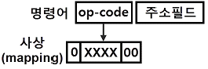
- 16 워드
- 64 워드
- 128 워드
- 256 워드
(정답률: 40%)
39. 2개의 2진수 변수로 최대 수행할 수 있는 논리 연산의 경우의 수는?
- 8
- 16
- 32
- 64
(정답률: 55%)
40. 플립플롭에 관한 설명으로 가장 적합하지 않은 것은?
- 플립플롭은 레지스터를 구성하는 기본소자이다.
- 일반적으로 2비트를 기억하는 메모리 소자이다.
- 플립플롭의 저장상태를 바꾸어서 회로의 기능을 변경할 수 있다.
- 정보는 전원이 공급될 때에만 보관 및 유지된다.
(정답률: 43%)
3과목: 시스템분석설계
41. 하나 이상의 파일을 입력하여 입력된 자료를 변형 및 가공 처리한다. 이후 입력파일과는 내용이나 형식이 다른 하나 이상의 새로운 파일을 만들어 내는 처리방법이다. 급여 마스터 파일에서 급여명세서 파일을 만드는 처리 작업을 무엇이라고 하는가?
- conversion
- generate
- extract
- distribution
(정답률: 52%)
42. 시스템분석가(SA)의 기본적인 조건과 가장 거리가 먼 것은?
- 기업목적의 정확한 이해
- 기계 중심적 사고
- 업무의 현상 분석능력
- 컴퓨터의 기술과 관리기법의 이해
(정답률: 73%)
43. 시스템 평가를 위한 시스템 요소의 판정기준으로 옳지 않은 것은?
- 신뢰성 : 정확하고 일관된 결과 도출
- 편리성 : 쉽게 익히고 사용할 수 있는 정도
- 효율성 : 자원의 이용과 시간 복잡도 양호 정도
- 생산성 : 기능 추가와 다른 생산 환경에 적응력 정도
(정답률: 64%)
44. 입력되는 데이터들을 논리적인 순서에 따라 물리적 연속 공간에 기록하는 방식으로 주로 자기테이프에 사용되며, 일괄 처리 중심의 업무처리에 많이 이용되는 파일 편성 방법은?
- 색인순차편성
- 순차편성
- 리스트편성
- 랜덤편성
(정답률: 54%)
45. 파일 편성 설계 중 랜덤 편성 방법에 대한 설명으로 옳지 않은 것은?
- 어떤 레코드라도 평균접근 시간 내에 검색이 가능하다.
- 운영체제에 따라서는 키-주소변환을 자동으로 하는 것도 있다.
- 키-주소변환방법에 의한 충돌 발생이 없으므로 이를 위한 기억공간 확보가 필요 없다.
- 레코드의 키 값으로부터 레코드가 기억되어 있는 기억장소의 주소를 직접 계산함으로써 원하는 레코드에 직접 접근할 수 있다.
(정답률: 72%)
46. 자료 흐름도의 구성 요소 중 대상 시스템의 외부에 존재하는 사람이나 조직체를 나타낸 것은?
- Process
- Data Flow
- Data Store
- Terminator
(정답률: 66%)
47. 은행예금에서 계좌번호를 확인하거나 사원코드의 확인 등에 사용되는 코드를 체크하는데 사용되는 방식은?
- sign check
- check digit check
- echo check
- input check
(정답률: 68%)
48. 두 모듈 간의 동일한 자료구조 포맷을 공유하는 결합도는?
- 자료 결합도
- 제어 결합도
- 내용 결합도
- 스탬프 결합도
(정답률: 46%)
49. 해싱에서 동일한 버켓 주소를 갖는 레코드들의 집합을 의미하는 것은?
- Slot
- Division
- Collision
- Synonym
(정답률: 65%)
50. ‘컴퓨터의 처리 효율이나 파일의 보관 등을 고려하여 같은 파일 형식을 갖는 2개 이상의 파일을 하나의 파일로 통합 처리한다.’는 의미는 무엇인가?
- extract
- conversion
- merge
- generate
(정답률: 67%)
51. 사람의 손에 의하여 코드를 기입하는 경우에 틀리지 않도록 하기 위하여 사용되는 방법에 해당하지 않는 것은?
- 고무인의 사용
- 사전 인쇄
- 교육 훈련
- 컴퓨터에 의한 코드 설계
(정답률: 47%)
52. 부여된 코드를 실제로 사용하는 단계에서 “381356”이 “383156“으로 오류(Error)가 발생되었을 때 어떤 오류에 해당하는가?
- Transposition Error
- Transcription Error
- Double Transposition Error
- Random Error
(정답률: 71%)
53. 시간의 흐름에 따른 시스템의 변화상을 보여주는 상태 다이어 그램을 작성하는 모형화 단계는?
- 객체 모형화 (object modeling)
- 동적 모형화 (dynamic modeling)
- 기능 모형화 (function modeling)
- 정적 모형화 (static modeling)
(정답률: 72%)
54. 시스템 개발 순서로 가장 적합한 것은?
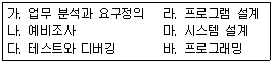
- 나 → 가 → 마 → 라 → 바 → 다
- 나 → 라 → 마 → 바 → 가 → 다
- 나 → 마 → 바 → 라 → 가 → 다
- 나 → 바 → 마 → 라 →가 → 다
(정답률: 76%)
55. 코드화 대상 항목을 10진 분할하고, 코드 대상 항목의 추가가 용이하며, 무제한적으로 확대할 수 있으나 자리수가 길어질 수 있고, 기계처리에는 적합하지 않은 코드는?
- Block code
- Decimal code
- Group classification code
- Sequence code
(정답률: 58%)
56. 시스템의 기본 요소 중 출력 결과가 만족스럽지 않거나 보다 좋은 출력을 위해 다시 입력하는 과정은?
- 출력
- 처리
- 제어
- 피드백
(정답률: 81%)
57. 개발자 측면에서 문서화의 표준화 효과가 아닌 것은?
- 프로그램의 작성이 용이하다.
- 인원 투입 계획의 수립이 용이하다.
- 시스템의 유지보수가 용이하다.
- 소프트웨어 및 시스템 기본 기능의 이해가 편리하다.
(정답률: 59%)
58. 출력 설계의 순서가 옳은 것은?
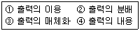
- ①→②→③→④
- ①→④→②→③
- ④→①→②→③
- ④→③→②→①
(정답률: 64%)
59. Waterfall 모델에서 개발될 소프트웨어에 대한 전체적인 하드웨어 및 소프트웨어 구조, 제어구조, 자료구조의 개략적인 설계를 작성하는 단계는?
- 타당성조사 단계
- 기본설계 단계
- 상세설계 단계
- 계획과 요구사항 분석단계
(정답률: 66%)
60. 프로세스 입력단계 체크 중 입력정보의 특정 항목 합계 값을 미리 계산하여 입력정보와 함께 입력하고, 컴퓨터상에서 계산한 결과와 수동 계산결과가 같은지를 체크하는 것은?
- 순차 체크(sequence check)
- 공란 체크(blank check)
- 형식 체크(format check)
- 일괄 합계 체크(batch total check)
(정답률: 66%)
4과목: 운영체제
61. 주기억장치의 관리 중 고정분할 할당에서 최초 적합 배치 전략을 사용한 예이다. 이러한 경우 발생하는 내적 단편화는 얼마인가?
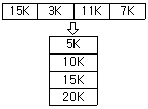
- 13K
- 14K
- 15K
- 16K
(정답률: 61%)
62. UNIX 운영체제에서 가장 핵심적인 부분으로 하드웨어를 보호하고 응용 프로그램들에게 서비스를 제공해 주는 것은?
- kernel
- shell
- IPC
- process
(정답률: 68%)
63. 컴퓨터 분산시스템을 위한 소프트웨어에 대한 설명으로 가장 옳지 않은 것은?
- 이기종 컴퓨터 플랫폼에서 응용 프로그램 실행이 가능하다.
- ODBC 드라이버라는 미들웨어를 통해 응용 프로그램이 데이터베이스에 접근이 가능하다.
- 한 컴퓨터에서 실행하는 응용 프로그램이 원격 컴퓨터에서 실행하는 다른 응용 프로그램과 통신할 수 있도록 한다.
- 자주 읽기 전용 메모리가 부착된 영구 저장소에 저장되는 실행 가능한 명령들을 의미한다.
(정답률: 59%)
64. 보안 메커니즘(mechanism)의 설계 원칙에는 개방된 설계, 최소 특권, 특권의 분할, 메커니즘의 경제성 등이 있다. 이 중 개방된 설계의 의미로 가장 적합한 것은?
- 알고리즘은 알려졌으나, 그 키는 비밀인 암호 시스템의 사용을 의미한다.
- 트로이 목마로부터의 피해를 제한하기 위해 모든 주체는 업무 완수에 필요한 최소한의 특권만을 사용해야 한다.
- 가능하다면 객체에 대한 접근은 하나 이상의 조건을 만족하게 해야 한다.
- 가능한 한 기능 검증과 쉽게 정확한 구현을 할 수 있도록 간단히 설계한다.
(정답률: 61%)
65. 기억 장치의 분할 방식이 아닌 것은?
- 분산분할
- 고정분할
- 단일분할
- 동적분할
(정답률: 39%)
66. 다음 프로세스에 대하여 HRN 기법으로 스케줄링 할 경우 우선순위로 옳은 것은?
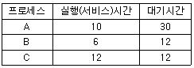
- A → B → C
- B → C → A
- A → C → B
- B → A → C
(정답률: 65%)
67. 명령어 수행 파이프라인의 네 단계를 순서적으로 올바르게 나열한 것은? (단, ID : Instruction Decode, IF : Instruction Fetch, OF : Operand Fetch, EX : Execution이다.)
- ID→IF→OF→EX
- IF→ID→OF→EX
- IF→OF→ID→EX
- ID→OF→IF→EX
(정답률: 46%)
68. SJF(Shortest Job First) 스케줄링에서 작업 도착 시간과 CPU 사용시간은 다음 표와 같다. 모든 작업들의 평균 대기시간은?
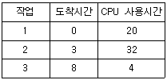
- 6
- 11
- 12
- 15
(정답률: 56%)
69. 프로세스 스케줄러의 스케줄링 정책에 해당하지 않는 것은?
- FIFO
- Round Robin
- Semaphore
- SJF
(정답률: 69%)
70. 운영체제에 대한 설명으로 옳지 않은 것은?
- 사용자에게 편리성을 제공하는 역할을 한다.
- 사용자와 컴퓨터 간의 인터페이스 역할을 한다.
- 여러 사용자 간의 자원 스케줄링을 효율적으로 한다.
- 사용자가 작성한 원시프로그램을 기계어로 번역한다.
(정답률: 75%)
71. 통신 회선으로 연결된 여러 개의 컴퓨터와 단말기에 작업과 자원을 분산시킨 후, 통신망을 통하여 교신 처리하는 운영체제 방식은?
- 실시간 시스템
- 다중 처리 시스템
- 시분할 시스템
- 분산 처리 시스템
(정답률: 69%)
72. 교착상태(deadlock)에 관한 설명으로 가장 적합한 것은?
- 두 개 이상의 프로세스가 자원의 사용을 위해 서로 경쟁하는 현상
- 이미 다른 프로세스가 사용하고 있는 자원을 사용하려고 시도하는 현상
- 두 개 이상의 프로세스가 서로 상대방이 사용하고 있는 자원의 사용을 위해 기다리는 현상
- 두 개 이상의 프로세스가 어느 자원을 동시에 사용하려 할 경우, 시스템에 의해 하나의 프로세스만이 사용하도록 선택되는 현상
(정답률: 51%)
73. 분산처리 시스템의 위상(Topology)에 따른 분류에서 성형(Star) 구조에 대한 설명으로 가장 적합하지 않은 것은?
- 터미널의 증가에 다른 통신 회선수도 증가한다.
- 중앙 노드 이외의 장애는 다른 노드에 영향을 주지 않는다.
- 각 노드들은 point-to-point 형태로 모든 노드들과 직접 연결된다.
- 제어가 집중되고 모든 동작이 중앙 컴퓨터에 의해 감시된다.
(정답률: 50%)
74. 유닉스에서 자식 프로세스를 생성할 때 사용하는 명령은?
- pipe
- fork
- mknod
- open
(정답률: 55%)
75. 파일 디스크럽터에 포함되는 내용이 아닌 것은?
- 파일의 이름
- 보조기억장치에서의 파일의 위치
- 생성된 날짜와 시간
- 파일 오류에 대한 수정 방법
(정답률: 67%)
76. 유닉스에서 프로세스의 구성 요소가 아닌 것은?
- 자료 영역(data area)
- 스택 영역(stack area)
- 메모리 영역(memory area)
- 사용자 영역(user area)
(정답률: 28%)
77. 가상 기억장치시스템에서 가상 페이지주소를 사용하여 접근하는 프로그램이 실행될 때 접근하려고 하는 페이지가 주기억장치에 없는 경우에 발생하는 현상은?
- Page Fault
- Context Switching
- Mutual Exclusion
- Overlay
(정답률: 73%)
78. 13K의 작업을 두 번째 공백인 14K의 작업공간에 할당했을 경우, 사용된 기억장치 배치전략 기법은?
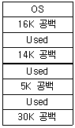
- 최초 적합(first-fit)
- 최적 적합(best-fit)
- 최악 적합(worst-fit)
- 최후 적합(last-fit)
(정답률: 78%)
79. 교착 상태 발생의 4가지 필요 충분조건이 아닌 것은?
- 상호 배제
- 점유와 대기
- 비선점
- 내부 시스템 자원 순서화
(정답률: 68%)
80. 다음 중 지정된 트랙에서 원하는 데이터가 있는 섹터로 헤드가 이동하는 데 걸리는 시간을 무엇이라고 하는가?
- 전송시간(Transfer Time)
- 탐색시간(Seek Time)
- 회전지연시간(Latency Time)
- 접근시간(Access Time)
(정답률: 43%)
5과목: 정보통신개론
81. 메시지의 임시 저장과 실시간 처리가 가능한 교환망은?
- 공중전화교환망
- 회선교환망
- 메시지교환망
- 패킷교환망
(정답률: 43%)
82. 아날로그 데이터를 디지털 신호로 변환하는 PCM(Pulse Code Modulation)방식의 진행순서를 바르게 나타낸 것은?
- 표본화 → 부호화 → 양자화 → 여과 → 복호화
- 표본화 → 양자화 → 부호화 → 복호화 → 여과
- 표본화 → 부호화 → 양자화 → 복호화 → 여과
- 표본화 → 양자화 → 여과 → 부호화 → 복호화
(정답률: 72%)
83. 컴퓨터의 물리적 자원들이 한 건물 내에 산재해 있을 때 정보 자원의 공유를 가능하게 해 주는 통신망으로 가장 적합한 것은?
- LAN
- VAN
- WAN
- ISDN
(정답률: 73%)
84. 전송 제어 장치(TCU)와 통신 제어 장치(CCU)에 대한 설명으로 가장 적합하지 않은 것은?
- 전송 제어 장치는 입출력 장치에 대한 각 데이터 전송회선과의 접속 및 전송 제어를 수행한다.
- 통신 제어 장치는 컴퓨터에 대한 각 데이터 전송회선과의 접속 및 전송 제어를 한다.
- 전송 제어 장치는 많은 통신회선 수를 취급하며 메시지의 처리 기능이 없다.
- 통신 제어 장치는 많은 통신회선 수를 취급하며 메시지의 처리 기능이 있다.
(정답률: 54%)
85. 이기종 프로토콜을 사용하는 망을 서로 연결 하는 데 사용되는 장치 또는 시스템으로 가장 적합한 것은?
- repeater
- gateway
- server
- client
(정답률: 67%)
86. 전송 장애의 주요 형태가 아닌 것은?
- 신호 감쇠
- 지연 왜곡
- 잡음
- 변복조
(정답률: 69%)
87. X.25 프로토콜의 3개 계층에 해당하지 않는 것은?
- 트랜스포트 계층
- 프레임 계층
- 패킷 계층
- 물리 계층
(정답률: 37%)
88. 통신 소프트웨어의 세 가지 기본 구성요소로 옳은 것은?
- 데이터 송수신, 통신 하드웨어 제어, 이용자 인터페이스 제어
- 데이터 입출력 제어, 데이터 처리, 데이터 분배
- 네트워크 제어, 전송 부호 관리, 이용자 인터페이스 제어
- 데이터 입출력 제어, 데이터 전송 제어, 통신 회선 제어
(정답률: 33%)
89. 3개 bit가 한 개의 신호 단위인 경우, 통신속도 bps와 보오(baud)의 관계는?
- bps = 1/3 baud
- bps = 2 baud
- bps = 3 baud
- bps = 4 baud
(정답률: 55%)
90. 다음 중 CRC 방식과 거리가 먼 것은?
- HDLC에서 사용
- 전진에러 제어
- 생성다항식을 사용
- 오류검출 기능
(정답률: 36%)
91. IPv6의 특징으로 틀린 것은?
- IPv6 주소의 길이는 256 비트이다.
- 암호화와 인증 옵션 기능을 제공한다.
- 프로토콜의 확장을 허용하도록 설계되었다.
- 흐름 레이블(Flow Label)이라는 항목이 추가되었다.
(정답률: 64%)
92. 정보통신 시스템에서 송신할 비트열에 대하여 NRZ(Non Return to Zero), RZ(Return to Zero)와 같은 변환을 수행하는 것은?
- 단말장치
- 전송장치
- 교환장치
- 컴퓨터장치
(정답률: 37%)
93. 시분할(Time-sharing)시스템의 설명으로 가장 거리가 먼 것은?
- 실시간(real-time) 응답이 주로 요구된다.
- 컴퓨터와 이용자가 서로 대화형으로 정보를 교환한다.
- 컴퓨터 파일 자원의 공동이용이 불가능하다.
- 다수의 단말기가 1대의 컴퓨터를 공동으로 사용한다.
(정답률: 62%)
94. 그림의 네트워크 형상(Topology) 구조는?
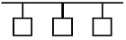
- Bus 형
- Token Ring 형
- Star 형
- Peer to peer 형
(정답률: 75%)
95. 국제전기통신연합의 약칭으로 국제 간 통신규격을 제정하는 산하기구를 두고 있는 것은?
- ITU
- BSI
- DIN
- JIS
(정답률: 71%)
96. 정보통신 시스템의 기능에 해당하지 않는 것은?
- 거리와 시간의 극복
- 대용량 파일의 공동 이용
- 정보 전송의 비신뢰성
- 대형 컴퓨터의 공동 이용
(정답률: 72%)
97. HDLC(High-Level Data Link Control)에 대한 설명으로 틀린 것은?
- 비트지향형의 프로토콜이다.
- 링크 구성 방식에 따라 세 가지 동작모드를 가지고 있다.
- 데이터링크 계층의 프로토콜이다.
- 반이중과 전이중 통신이 불가능하다.
(정답률: 67%)
98. IEEE 802.15 규격의 범주에 속하며 사용자를 중심으로 작은 지역에서 주로 블루투스 헤드셋, 스마트 워치 등과 같은 개인화 장치들을 연결시키는 무선통신 규격은?
- WPAN
- VPN
- WAN
- WLAN
(정답률: 41%)
99. 데이터를 양쪽방향으로 모두 전송할 수 있으나 동시에 양쪽방향에서 전송할 수 없는 통신 방식은?
- 단방향통신(simplex)
- 반이중통신(half-duplex)
- 이중통신(duplex)
- 역방향통신(reverse)
(정답률: 76%)
100. HDLC 링크구성 방식에 따른 세 가지 동작모드에 해당하지 않는 것은?
- 정규응답모드(NRM)
- 동기응답모드(SRM)
- 비동기응답모드(ARM)
- 비동기균형모드(ABM)
(정답률: 55%)